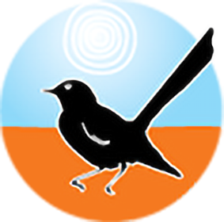

Copy & Content
Selected copy, content and scriptwriting across editorial, fundraising and web.
Watarrka Foundation — Not-for-profit, Northern Territory

Articles and newsletters for an Australian NFP supporting Indigenous youth in the Northern Territory. Work covers education initiatives, project updates and fundraising appeals.
— On Caring for Country with Watarrka Ranger Doug Taylor Interview
— Books with Language: Celebrating Traditional Languages for Indigenous Literacy Day Curated reading list
— What is the Indigenous School Attendance Gap and Why Does it Matter? Educational article
— Uluru and Kata Tjuta: Culture, History and Handback Educational article
— Sand Talk by Tyson Yunkaporta Book review
— Reflecting on the 2023 Lilla Sports & Storytelling Festival Personal reflection
Scriptwriting — Script commissioned by Vector Visuals for Highland Real Estate